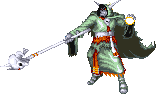
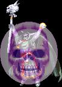

떡갈나무 요새 (스테이지 6) 보스 '리치' 스테이지 6은 보스가 둘 존재하는 셈이다. |
기본 정보
클리어 시간 측정의 시작 시점
리치를 소환되면서 번개줄기가 생성 될 때 최단 시간 클리어 기록
엘프 4:37 |
|||||||||
| 점수 아이템 : | |
| 도구류 : | ||
| 반지류 : | ||
| 장비류 : | |
|
| 완드류 : | ||
| 기타 : | 스크롤(scroll) 최대 6레벨 |
게임상에서도 대부분의 주문이 먹히질 않으며 닿기만 해도 데미지를 입고 투척무기도 은제 무기만 통하는 까다로운 보스다. 그래도 확실한 공략법이 존재하니 걱정 할 필요는 없다.
전작 TOD의 최종 보스였는데 그 때에 비해 위압감은 많이 줄어든 편이다.
리치가 될 때 가장 기본이 되는 것은 자신의 생명이 담긴 마법 성구함을 만드는 일 이다. 리치를 확실하게 제거하는 유일한 방법은 이 마법 성구함을 완전히 박살 내는 것 이다. 그렇지 않는 한 리치가 죽은 것으로 보여도 1d10(1~10)일 내에 다시 부활하게 된다.
모든 리치는 이 마법 성구함을 가지고 있으며 이 성구함을 만드려면 뛰어난 공예 기술이 필요하다. 또한 성구함을 만드는데는 120000gp와 - 1gp는 10sp - 4800xp가 필요하다.
보통 대부분의 성구함은 마법 구문이 적힌 양피지 띠가 둘러져 있는 굳게 봉인된 금속 상자다. 크기는 보통 작고 40HP를 가지고 있으며 무려 경도 20이다. 상자 형태 말고도 반지나 부적같은 형태로도 존재한다.

"여기까지 당도하다니 놀랍구나."

"허나 안됐지만 네놈들의 보잘 것 없는 모험도 여기서 끝이다......"

"후후후......그 보잘 것 없는 모험을 끝내 줄 만한 인물을 알고 있지......"
그리고 나서 리치가 소환된다. (제발로 들어 온 것 인지도 모르겠지만)
(현재 룰 상에서는 비행능력은 없다.)
▶ 리치의 몸에 조금이라도 스치면 즉시 마비가 되며 이 후의 공격에 무기력하게 당하게 된다.
오브가 있으면 데미지는 입지만 마비를 막을 수 있다. 데미지는 15/20.
▶ 투척무기는 은단검, 은화살만 데미지를 입힐 수 있다.
▶ 아이스 스톰, 컨주어 엘리멘탈, 이프리트의 항아리, 진 소환의 반지, 스틱 투 스네이크, 인섹트 플레이그를 제외한 모든 주문, 마법 도구가 먹히지 않는다. 컨티뉴얼 라이트의 경우 자체 효과는 없지만 움찔하게 만드는 효과는 있어서 어스 퀘이크나 메테오 스웜을 쓰기 전에 취소 시킬 수 있다.
▶ 아이스 스톰, 매직 유저의 컨주어 엘리멘탈, 엘프의 컨주어 엘리멘탈(오른쪽), 이프리트의 항아리의 경우 리치가 데미지를 입은 후 플레이어 쪽으로 튕겨져 오는 경우가 많다. 쓸 때 주의 하도록 한다.
▶ 플레이어의 공격을 가드하고 나면 이동속도와 공격속도가 빨라진다. 조심해야 한다.
| ※ 붉은색은 파이터가 입는 데미지, 푸른색은 매직 유저가 입는 데미지. 클레릭/드워프는 파이터에 가까운 데미지를, 시프/엘프는 매직 유저에 가까운 데미지를 입는다. ※ 금색 이름의 공격을 하는 도중에는 D키를 쓸 수 없다. |
|||||
| 내려치기 (19/26) | |||||
|  | 들고 있는 해골 막대기를 내려친다. 빠르고 리치가 길며 연속으로 공격하기 때문에 방심하면 맞을 수 있다. 매직 유저나 시프, 엘프가 맞으면 꽤 아프다. 특히 리치가 짧은 엘프같은 경우 무척 고생할 수 있다. 속도가 빨라졌을 때 연속으로 들어오면 정말 무섭다. |
||||
| 돌진 (15/20) | |||||
| 잠깐 뒤로 물러났다가 돌진을 한다. 그림자 치기로 접근하다가 맞을 수도 있다. 그러나 뒤로 잠깐 물러서는 동작이 충분히 보이기 때문에 피하기는 어렵지 않다. 그러나 맞은 후에 쓰러지는데 일어나서 마비 된 상태가 되기 때문에 맞지 말도록 한다. |
|||||
| 점프 공격 (19/26) | |||||
| 점프 후에 해골 막대기를 내려친다. 그런데 체공시간이 제법길기 때문에 일부러 맞아주지 않는 한 별로 위험하진 않다. | |||||
| 옷자락 털기 (15/20) | |||||
| 자신의 낡은 옷자락을 펄럭인다. 닿으면 데미지를 입고 마비가 된다. 겉보기는 별거 없어 보이지만 은근히 위험한 공격이다. 다만 리치는 길지 않으니 먼저 공격하면 제압할 수 있다. | |||||
| 파이어 볼 (23/33) | |||||
| 구슬을 든 손을 내뻗어 파이어 볼을 날린다. 준비 동작도 빠르고 날아가는 속도도 빠른데다가 폭발 범위가 꽤 넓어서 반응이 느렸다면 피하기란 거의 어렵다. 또한 2연속으로 시전하는 경우도 있다. 불이니 만큼 불 내성의 반지나 주문 무효화 반지가 있으면 데미지를 입지 않는다. |
|||||
| 라이트닝 볼트 (25/37) | |||||
| 해골 막대기를 들어서 라이트닝 볼트를 날린다. 파이어 볼에 비해 준비 동작은 비교적 느린데 대신 내미는 해골 막대기에 맞으면 마비가 되며 데미지를 입고 만다. 이어 날아오는 라이트닝 볼트에 연이어 맞을 수도 있으니 역시 위험하다. 주문 무효화 반지가 있으면 데미지를 입지 않는다. |
|||||
| 파이어 월 (20/30) | |||||
| 양손을 번쩍 들어서 고함을 지르면서 사방으로 불기둥을 생성한다. 플레이어와 가까이 있을 때 순간 시전하기 때문에 피할 새도 없이 당하게 된다. 스테이지의 맨 위나 맨 아래에 있으면 가까이 있더라도 이 주문을 시전하지 않는 경우가 많지만 절대적인건 아니다. 역시 불이니 만큼 불 내성의 반지나 주문 무효화 반지가 있으면 데미지를 입지 않는다. |
|||||
| 텔레포트 | |||||
| 무작위로 텔레포트를 시전한다. 다시 나타나는 곳은 중앙이다. 이 자체로는 위험할 것이 없지만 문제는 한참 구석에 몰아넣고 공격하는데 텔레포트로 빠져나가는 것 이다. 막을 방법이라면 칼 같은 타이밍으로 빈틈없이 공격하는 것 인데 사람이 조종하는 이상 빈틈이 생기기 때문에 텔레포트 할 확률은 항상 존재하게 된다. 헤이스트를 시전하고 공격하는 수준이 아닌 이상 원천 봉쇄는 거의 힘들다. |
|||||
| ※ 어스 퀘이크 | |||||
|  | HP가 일정 수준으로 떨어지면 순간 양손을 치겨들며 고함소리를 내면서 지진을 일으킨다. 데미지는 없지만 쓰러지게 되는데 하필이면 대부분 리치쪽으로 쓰러지게 된다.
일어나면서 리치 몸체에 닿게 되는 불상사가 발생 할 가능성이 큰 것 이다. 앉아 있으면 쓰러지지 않으며 시프, 매직 유저의 경우 대점프로도 피할 수 있다. 더 큰 문제는 이 이후에 이어지는 애니메이트 데드인데 어스 퀘이크를 시전 후 재빨리 공격을 하면 애니메이트 데드 시전을 막을 수 있다. 첫번째 어스 퀘이크를 피했더라도 이 후에 리치를 놓쳐서 돌아다니게 된다면 무작위로 순간 어스 퀘이크를 쓰는 경우가 있다. |
||||
어스 퀘이크를 시전하는 시점 - 잘 눈여겨 보도록 한다. 리치를 공략하는데 아주 중요한 부분이다.
|
|||||
| ※ 애니메이트 데드 | |||||
 |
어스 퀘이크 이후에 구울을 소환한다. 1인 플레이시 3마리, 2인 이상 플레이시 4마리를 소환한다. 애니메이트 데드를 쓰기 전에 공격해서 막는 것이 상책이다. 구울이 돌아다니게 될 경우 클레릭은 턴 언데드로 제거 할 수 있지만 다른 클래스는 마땅한 대책이 없다. |
||||
| ※ 메테오 스웜 (32/43) | |||||
| 일정 HP이하로 떨어지거나 혹은 일정 시간을 끌었을 경우 유성 무리를 소환한다. 고레벨 주문이니 만큼 맞으면 아프다. 한참 시간을 끌었으면 아무때나 막 시전하니 시간을 오래 끌지 않는게 좋다. 그러나 스테이지 맨 위나 맨 아래에 있으면 맞지 않는다. 불 내성의 반지나 주문 무효화 반지가 있어도 맞지 않는다. |
|||||
메테오 스웜을 시전하는 시점
|
|||||
스테이지를 왔다갔다 하면서 리치와 싸우는건 비효율적 이면서 또한 위험하다. 쓰러지지 않으니 구석에 몰아넣고 패는게 유용하다. 그런데 일정 시점에서 메테오 스웜을 시전하니 안전하게 피할 수 있는 맨 아래쪽이 가장 무난하다. 아래 스샷 위치 부근에 있으면 된다. 그쪽에 스피드 포션, 혹은 힘의 포션이 나오는 상자도 있으니 여러모로 적합한 장소다.
각 클래스의 무기 리치에 따라 위치를 적절히 조절하도록 한다. 특히 신경써야 할 클래스는 시프인데 유난히 앞으로 뻗는 공격 모션때문에 공격하다가 리치 몸에 닿기 일쑤니 충분히 거리를 확보해야 한다.
◎ 리치의 초반 패턴
스샷의 위치에 서 있으면 알아서 구석으로 들어 올 때가 있고 뒤쪽으로 올 때가 있다. 구석으로 알아서 들어간다면 문제가 될게 없지만 뒤쪽으로 가면 옷자락을 털 때가 있고 돌진을 할 때가 있다.
돌진을 한다면 알아서 구석으로 들어가게 되기 때문에 이 또한 문제될게 없는데 옷자락을 털 때는 계속 털고 있거나 맨 아래까지 내려오곤 한다. 파이터, 드워프, 엘프는 A+B를 써서 구석으로 끌어들이면 된다. 드워프는 리치를 바라보면서 A+B를 써야 된다는 점을 잊지 말자.
시프, 클레릭, 매직 유저는 걷든지 슬라이딩 하든지 해서 살짝 리치 뒤로 빠진 다음 슬래쉬나 강공격을 이용해서(매직 유저는 A공격으로) 구석으로 몰아 넣도록 하자.
◎ 공격 속도의 조절
그냥 무작적 공격하면 리치가 가드하거나 뒤로 튕기는 시점과 공격 시점이 어긋나면서 지팡이 내려치기에 당할 가능성이 크다. 리치의 반응을 잘 지켜보면서 공격 속도를 잘 조절해야 한다. 특히 시프와 매직 유저가 잘 지켜야 할 부분이다.
◎ 포션의 활용
왼쪽 구석 아래에 얼핏 상자가 보일 것 이다. 그 상자를 파이터, 클레릭, 드워프가 열면 스피드 포션, 시프, 매직 유저, 엘프가 열면 힘의 포션이 나온다. 이를 이용해서 좀 더 빠르게 클리어 할 수 있다. 각각 활용 방법은 클래스별 공략에서 확인하기 바란다.
상자를 들어서 스샷의 위치에서 구석을 향해 던지면 포션이 서 있는 위치로 떨어진다. 리치가 최대한 가까이 접근할 때 줏을 수 있어서 포션의 효과를 잠깐이라도 더 누릴 수 있다. 대신 같이 나오는 에메랄드는 줍기 힘들 수 있으니 플레이어가 적절히 판단하기 바란다.
◎ 어스 퀘이크 피하기 / 애니메이트 데드 막기
HP가 어스 퀘이크를 쓰는 시점이 된 후 뒤로 튕긴 다음에 어스 퀘이크를 시전한다. HP를 잘 지켜보고 있다가 리치가 뒤로 튕긴다 싶으면 바로 앉도록 한다. 어스 퀘이크의 해골표시가 사라지면 바로 일어나서 공격하면 애니메이트 데드를 막을 수 있다.
◎ 메테오 스웜 취소시키기
메테오 스웜을 시전하기 전에 진 소환의 반지, 컨티뉴얼 라이트(반지 포함), 엘프의 컨주어 엘리멘탈(왼쪽)을 사용하면 메테오 스웜을 취소 시킬 수 있다.
- 위에서 말했듯이 아이스 스톰, 매직 유저의 컨주어 엘리멘탈, 엘프의 컨주어 엘리멘탈(오른쪽), 이프리트의 항아리는 위험하다. -
HP를 잘 보고 있다가 시전 시점이 되서 리치가 뒤로 튕겨나갈 때 사용하면 된다. 몇번 해봐서 감을 잡는게 좋다. 리치를 4분대에 잡기가 쉽지 않은 편인데 성공한다면 클리어 시간을 꽤 단축 시킬 수 있다. 같은 방법으로 어스 퀘이크도 취소가 가능하다.
◎ 텔레포트로 빠져 나갔다면
구석에 몰아넣고 공격하는 도중에 약간이라도 빈틈이 생기면 텔레포트를 하는데 어떨 때는 자주 텔레포트를 하는가 하면 어떨 때는 안한다. 실력과 상관없이 운에 어느정도 좌우된다는 뜻이다. 드워프와 엘프의 부유 신발을 이용한 공략법이 아닌 이상 100%막을 수는 없다.
리치도 어느정도 원을 그리면서 이동한다. 맨 아래에서 좌우로 이동하면서 리치를 구석으로 유도하자. 혹 뜻대로 안따라 주고 등뒤로 오려고 한다면 위쪽에서 이야기 했던 방법인 A+B, 혹은 슬라이딩 후 강공격/슬래쉬로 구석으로 집어 넣도록 한다. 정 리치가 안 따라와 준다면 맨 위로 이동해서 구석으로 몰기를 시도해도 무방하다.
◎ 구울이 소환 됐다면
클레릭이 아니라면 참 답이 안나오는 상황이다. 파이터, 드워프, 엘프는 적절히 A+B를 구사해서 위기를 모면하는 수 밖에 없다. 시프는 구울이 그림자 치기 위치에서 서성이길 바래야 한다. 매직 유저는 아이스 스톰이든 컨주어 엘리멘탈이든 난무하는 것이 낫다.

"내가 네놈들을 너무 과소평가 한 것 같구나."

슬립(sleep)을 시전해서 플레이어 전원을 잠들게 한다.

"하지만 아직 네놈들은 애송이야. 잘 자거라......"

배경의 두 인물은 웃으며 사라지고 이 스테이지는 마무리 된다.